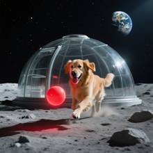
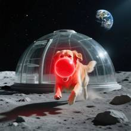
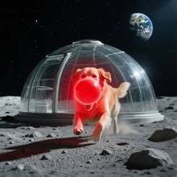
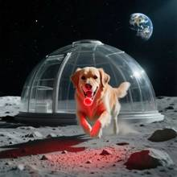
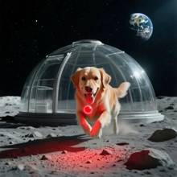
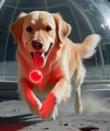

Entity Layout — In the transparent dome base on the lunar surface, a golden retriever
In the transparent dome base on the lunar surface, a golden retriever chases a red ball of light floating in front of it.

Judge — Direct
- FAILEntity Layout - Three-Dimensional Space — In the image, a solid red ball with a textured surface is depicted floating in the air in front of the golden retriever. The prompt requires a 'red ball of light', but the image shows a solid physical object that is glowing, not an object made of light.
- PASSWorld Knowledge — The ground outside the transparent dome is gray, uneven, and covered with craters of various sizes. The background is a black sky with pinpoints of light. This visual representation is consistent with common depictions and knowledge of the lunar surface.
Judge — Continuum
- PASSEntity Layout - Three-Dimensional Space — A glowing red ball is depicted floating in the air directly in front of the golden retriever's chest.
- PASSWorld Knowledge — The ground is gray, dusty, and has craters and rocks, consistent with the appearance of the lunar surface. The Earth is visible in the black, starry sky, further establishing the location as the moon.
What the agent did
Thinking
The user wants the following image: on the lunar surface, at the base of a transparent dome, a golden retriever is chasing a red sphere of light floating in front of it. Let me generate this with qwen-image, then verify and edit as needed. Prompt: On the lunar surface, inside/below a transparent dome, a golden retriever is chasing a red sphere of light floating in front of it. A lunar habitat with a transparent dome, the moon's regolith, a dark starry sky, Earth might be visible in the sky. The dog is mid-stride, running, and the red sphere of light floats in front of the dog. Let me write a detailed prompt.
Step 1 — `generate_image`
{
"model": "qwen-image",
"prompt": "Photorealistic scene on the lunar surface: a large transparent glass dome habitat resting on grey moon regolith, dark starry black sky above with a faint view of Earth. Inside the clear dome, a golden retriever dog is mid-stride, running forward, tongue out, chasing a glowing red ball of light that floats just in front of the dog's nose. The red orb emits soft red light, casting a red glow on the dog's face and on the glass dome wall behind it. Moon rocks and dust around the dome base, dramatic cinematic lighting, sharp detail.",
"width": 1024,
"height": 1024
}Result img_0

Thinking
Let me evaluate this image against the prompt: Prompt: "Inside a transparent dome base on the lunar surface, a Golden Retriever is chasing a red sphere of light floating in front of it." What's in the image: - Lunar surface ✓ - Transparent dome ✓ - Golden Retriever ✓ (looks like a Golden Retriever) - Red sphere of light ✓ (glowing red orb) - Is the dog chasing it, with the orb in front of the dog? Hmm. The orb is floating on the left side, at the lower-left of the dog, but the dog is facing forward, running toward the viewer. The orb is on the dog's right side, at a lower position, not really "in front of" the dog. The dog is running toward the camera, and the orb is behind/beside it. It looks more like the dog is passing by the ball than chasing it. The dog's head is turned toward the camera, not at the ball. Also, there's a weird red puddle on the ground in the foreground — looks like a reflection of the red light, which is actually fine, but a bit blob-like. Issues: 1. The red sphere isn't really "in front of" the dog — the dog is running away from it, or passing it. For a convincing "chasing" scene, the dog should be oriented toward the ball, and the ball should be in the direction the dog is moving/looking. 2. The red puddle on the ground in the lower left is a bit unnatural — looks like spilled liquid. Actually it might be a red light reflection on a slightly wet/dusty patch. A bit unnatural but might be acceptable. The most important thing is: the dog should be chasing the sphere of light in front of it. Let me try editing: make the dog run toward the left, chasing the floating red orb that's ahead of it. I'll use edit_image with a targeted instruction. The edit model is qwen-image (Qwen-Image-Edit). The instructions are: "Turn the Golden Retriever's body so it's running to the left, in the direction of the red orb of light, with the floating orb directly in front of the dog's nose. The dog is chasing the orb." Actually, a better approach might be: keep the dog's pose but reposition the orb to be directly in front of the dog (center of the frame, toward the camera?). The dog is running toward the camera. If I place the orb in front of the dog, it would come between the dog and the camera, and the dog would be facing the camera while chasing the orb toward the viewer — which is a classic composition: the dog running at the camera, with a glowing orb just ahead of its nose. The orb is currently at the lower left of the dog. I'll edit to move it to the center, directly in front of the dog, at the same height as the dog's head/chest, so it clearly reads as "the dog is chasing the floating orb in front of it." Let me make that edit.
Model
The scene is mostly in place, but the red ball isn't clearly in front of the dog — the dog is running toward the camera while the ball sits off to the side, which weakens the "chasing" read. Let me fix the composition.
Step 2 — `edit_image`
{
"image": "img_0",
"model": "qwen-image",
"prompt": "Move the glowing red ball of light so it floats directly in front of the golden retriever's face, centered in the frame just ahead of the dog's nose at the same height as its head. The dog is clearly chasing it: body stretched forward toward the ball, head lowered and focused on the ball, mouth open reaching for it. The ball glows red and casts a red rim light on the dog's snout and chest. Keep everything else exactly the same."
}Result img_1

Thinking
Now, the dog is chasing a red light ball right in front of it. Issues: 1. The red ball is a bit large — it's covering the dog's entire snout/mouth area. It looks like the dog is biting the ball. Actually, for a "chasing" scene, it's fine for the ball to be in front of the dog's nose, but this one is pretty large, and it's obscuring the face. It's a bit awkward — the ball is huge compared to the dog's head. The original ball was a more reasonable size (smaller than the head). Now it's the size of the head. 2. There's a weird dark red puddle in the lower-left foreground — like spilled blood. Looks unnatural. 3. The dog's expression — the mouth is open, and it's fine for it to look like it's trying to grab the ball, but the ball is too large. The puddle: it's a dark red liquid-like patch, looks like a pool of blood. The prompt only requires the moon surface, the dome, the dog, and the red light ball. The puddle is a distracting element that was present in the original image. Should delete it — replace it with normal gray regolith. Let me edit: shrink the red ball to a more reasonable size (smaller, floating slightly in front of and to the left of the nose), and delete the dark red puddle on the ground (replace with gray moon dust). Following the discipline, these are two changes — "multiple changes in one prompt produce attribute drift." Should I do one edit for the ball size and another for the puddle? Or combine them? The guidance says to split ordered single-entity edits when multiple different changes are mentioned. First do the puddle, then the ball, or combine them? Let me do the puddle deletion first (safe fill-type edit), then the ball size adjustment. No, actually, since the ball is right in front of the dog's nose in the center, and the puddle is far away in the lower left, a single prompt containing both might work, but the risk of drift... The discipline says to split. Let me make two sequential edits. First: delete the puddle — "replace the dark red liquid-like puddle on the moon dust in the foreground with normal gray lunar regolith, matching the surrounding dusty texture."
Model
I'm working on shrinking the ball to make it look less like the dog is biting it, and then I'll clean up the dark red puddle in the foreground.
Step 3 — `edit_image`
{
"image": "img_1",
"model": "qwen-image",
"prompt": "Remove the dark red liquid puddle on the ground in the lower left foreground, replacing it with ordinary grey lunar regolith dust and small rocks matching the surrounding moon surface texture. Keep everything else exactly the same."
}Result img_2

Thinking
The puddle of water is gone — good. The remaining issue is that the red ball is too big (head-sized) and is covering the dog's mouth. The original ball in img_0 was a more appropriate size (smaller than the head). Let me try shrinking the ball while keeping it in front of the dog. Edit: "Shrink the red glowing ball to about half its current size, and float it just in front of the dog's nose, slightly to the left (viewer's left) and a bit higher, so that the dog's face is clearly visible and it appears to be chasing the ball. Maintain the red light on the dog's face."
Model
Puddle removed. Now shrink the ball to a natural size so the dog's face reads as chasing rather than biting a head-sized orb.
Step 4 — `edit_image`
{
"image": "img_2",
"model": "qwen-image",
"prompt": "Shrink the glowing red ball to roughly half its current size. Keep it floating directly in front of the golden retriever's nose, slightly above snout level, so the dog's full face and open mouth are clearly visible behind it and the dog reads as chasing the small floating orb. Preserve the red rim light the ball casts on the dog's snout and chest. Keep everything else exactly the same."
}Result img_3

Thinking
Now the ball is small, but it's positioned on the dog's chin / under its mouth — looks like the dog is licking or biting a small ball under its chin. It's not clearly "in front" of the dog. Also, a reddish tint has appeared on the foreground ground (the dog's red light is illuminating the ground in front — actually that's fine, and realistic as a light source). The dog's red light on the chest is a bit strong, but it's within acceptable range as a glow effect. Ball position: currently at the dog's chin / lower lip, in front of the open mouth. Hmm, actually it might be readable as the dog chasing / about to catch the ball. But it looks a bit more like the ball is stuck on the chin. It would be better to move the ball slightly higher, in front of the face — around nose / mouth height, with the dog's tongue reaching out toward it. Let me try one more targeted edit: move the ball up to nose height, float it slightly ahead of the face, and have the dog's tongue / mouth open toward it. Also to confirm: the reddish ground patch in the foreground — this is the light from the ball hitting the ground in front of the dog, and is physically consistent with the ball being right in front of the dog. OK. Let me do the edit of moving the ball up to nose height.
Model
The ball is now the right size but sits low at the dog's chin, looking like it's stuck to the mouth. One more adjustment: raise it to nose height, clearly ahead of the face.
Step 5 — `edit_image`
{
"image": "img_3",
"model": "qwen-image",
"prompt": "Move the small glowing red ball up and slightly forward so it floats just in front of the dog's nose at nose height, not touching the mouth or chin. The dog's open mouth and tongue should reach toward it from below, as if it is about to pounce on the floating orb. The ball stays the same small size and bright red glow. Keep everything else exactly the same."
}Result img_4

Thinking
Hmm. Now the ball is floating below the chin, near the chest, between the front paws. Still not at nose height. It reads as if the ball is bouncing off the ground in front of the dog. The dog's mouth is open with the tongue out, looking like it's chasing. Actually… let me think about how it reads: dog running toward camera, mouth open, tongue out, small red glowing ball floating low in front, between the extended front paws. This could read as the dog chasing the floating ball — the ball is in front of the dog, on the running line. That's actually a pretty good "chasing" composition. But wait, the ball is slightly below the chin, floating in the air at roughly paw height. The dog's gaze is directed forward/downward. Honestly, this reads fine as "chasing a red glowing ball floating in front of it." Alternatively, img_3's composition with the ball at the lower lip — similar. In img_4 the ball is clearly in front (between the paws), and the dog's open mouth is reaching for it. I think img_4 is the best read so far. Let me check the details: - Golden Retriever: yes, looks like a golden retriever. - Red glowing ball: yes, small, glowing, in front. - Chasing: the dog is running with an open mouth, body leaning forward. - Transparent dome: yes, glass dome behind. - Lunar surface: gray regolith, rocks, yes. - Floating: the ball is in the air, yes. Minor nitpicks: the dog's red glow on the chest/paws is a bit strong (the paws look like they're glowing red), and the red light pool on the ground in front is a bit large, but physically it's consistent. I could try one more edit to put the ball exactly at nose height, but each edit risks a regression, and the current composition reads well as "chasing a red glowing ball floating in front of it." Following the "good enough is a stopping condition" principle, I should stop here. Let me zoom in on the dog's face and the ball to confirm there are no artifacts, then mark img_4 as the best.
Model
This reads well now: the ball floats clearly ahead of the dog in its running line, with the dog's mouth open reaching for it. Let me zoom in to verify the dog and ball look clean before marking.
Step 6 — `inspect_region`
{
"image": "img_4",
"roi": "the golden retriever's head and the red glowing ball",
"padding": 0.1
}Result img_5

Thinking
The close-up looks clean: a golden retriever with a happy open mouth and tongue out, running forward, with a small red glowing ball floating below and in front of its chest. No obvious artifacts around the face or the ball. The red light on the chest/legs is a bit strong, but it's consistent with a glowing light source. This is a good result. Mark img_4 as the best and stop.
Model
The close-up is clean — a golden retriever with a joyful open-mouthed running expression, with a small glowing red ball clearly floating in front of its chest, and no artifacts. The composition satisfies all the elements of the prompt: the lunar surface, the transparent dome base, the dog chasing the red sphere of light floating in front of it.
Step 7 — `mark_best`
{
"image": "img_4",
"reason": "Golden retriever running mid-chase inside a transparent dome on the lunar surface, small glowing red ball floating in front of it, clean details, all prompt elements present."
}Thinking
Done. The final image img_4 has been marked as the best. Let me summarize.
Model
Done. The final image shows a golden retriever mid-stride inside a transparent glass dome on the lunar surface, mouth open and tongue out, chasing a small glowing red ball of light floating just ahead of it. Earth hangs in the dark starry sky above, and the ball's red glow rims the dog's face and chest and pools on the regolith in front. I marked it as the best result.